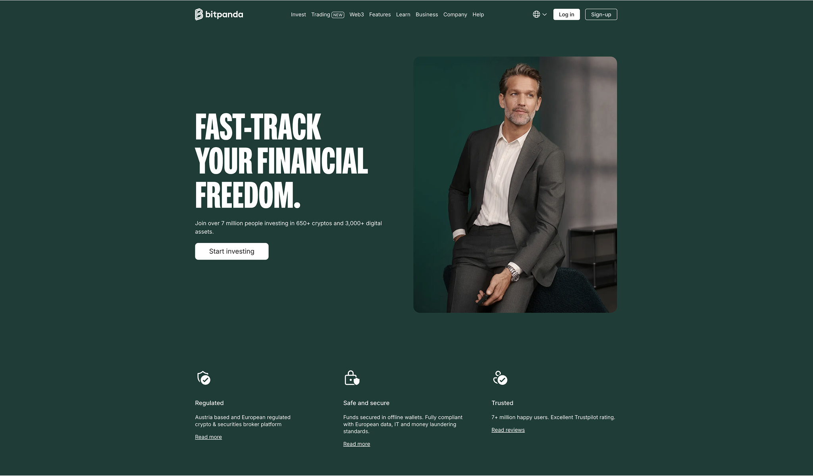
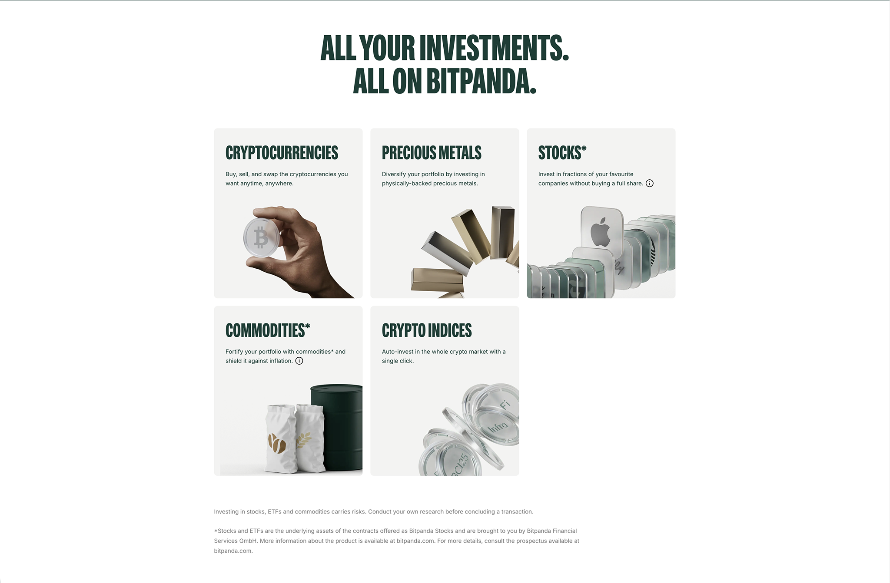
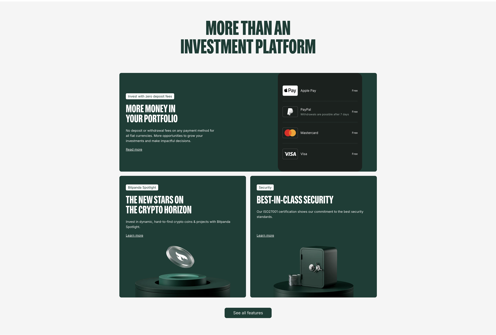
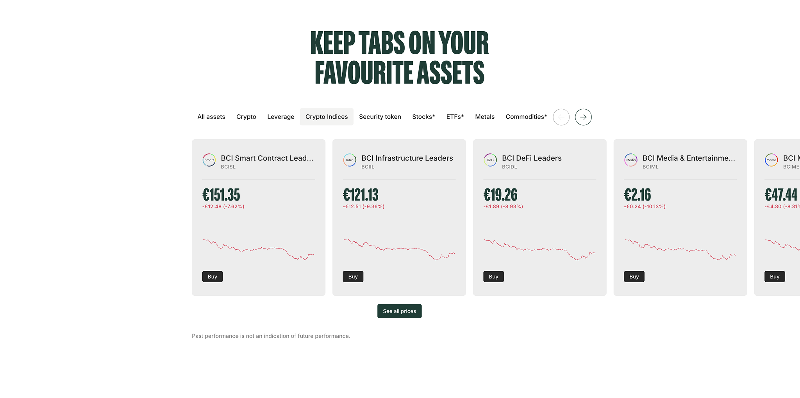
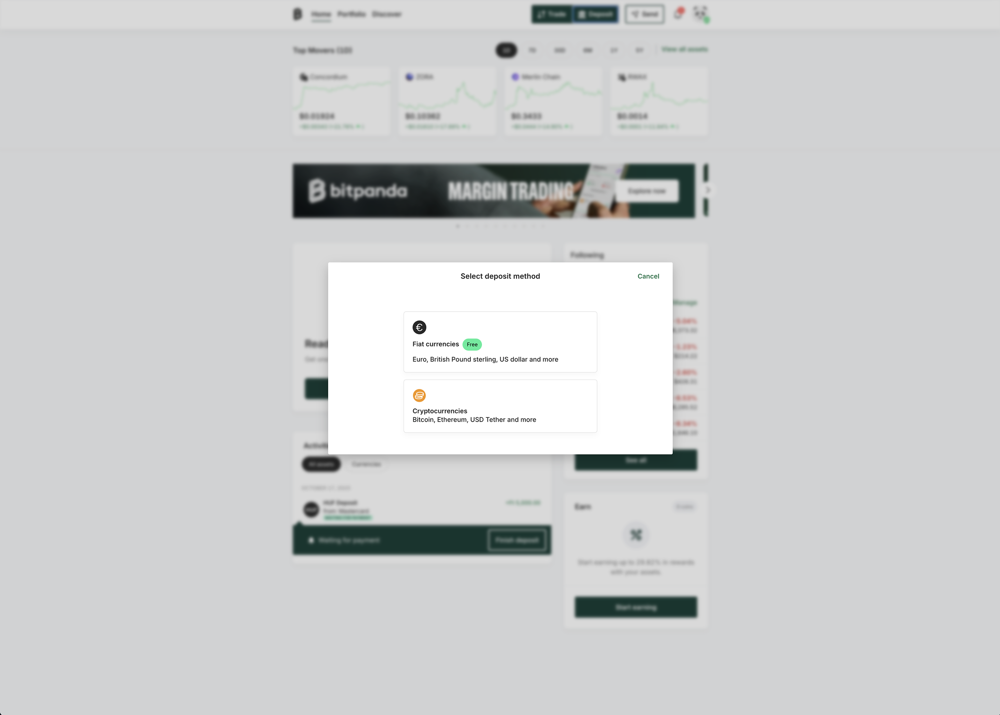
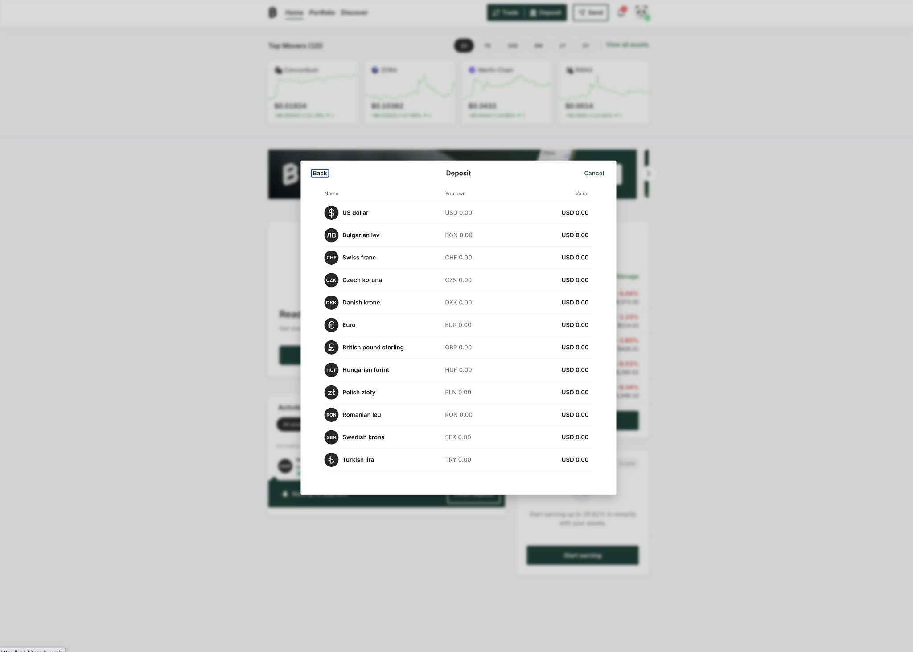

- Role
- Product designer leading the core redesign
- Focus
- Trading, deposits and portfolio
- Period
- 2021–2022
- Delivery
- Retail and bank-ready product system
Measurement note: Where quantitative outcomes are shown, they are rounded portfolio-reported project metrics and are not presented as independently audited company disclosures.
My Role & Mission
Led the redesign of Bitpanda’s core trading and portfolio experience used by millions of retail users, plus the bank-ready variant later adopted by Raiffeisen via white-label distribution. Scope included the end-to-end deposit journey (KYC + card validation) to meet banking-grade compliance while staying fast for everyday users. Objective: keep Bitpanda’s speed and clarity while making it credible and adaptable for regulated environments.
Challenges
Bitpanda scaled quickly, but legacy flows weren’t designed for bank-grade scrutiny or lower-confidence users arriving through institutional channels. High-risk actions (deposit, trade execution, withdrawal) needed stronger confirmations and trust cues. Portfolio understanding was low, risk states were inconsistent, and distribution partners (e.g., Raiffeisen) required better accessibility, localization, and auditability—without forking the product.
The Process
Rebuilt the full financial journey—onboarding → deposit (KYC/card) → discovery → execution → portfolio → history—around trust, reversibility, and clarity. Standardized risk/state communication, redesigned confirmations for credibility and cognitive safety, and introduced a consistent visual + verbal system so the product became bank-ready without extra friction. Compliance and Raiffeisen legal/ops partnered on tone and localization; changes were user-tested to raise understanding and confidence before broad rollout.
Who We Designed For
- Retail traders who need clear, low-friction deposit and first-trade flows
- New, low-confidence users entering via bank distribution who need extra guidance and trust
- Compliance/legal partners who require auditability, accessibility, and localization across markets
UX Methods & Why They Were Used
- Contextual inquiry & task shadowing: saw how users actually fund accounts, place first trades, and review portfolios—revealed where trust breaks.
- JTBD & task mapping: focused on outcomes like fund successfully, place first trade, understand positions & risk, withdraw safely.
- Heuristic reviews & cognitive walkthroughs: surfaced weak trust signals, inconsistent risk states, and brittle confirmation patterns early.
- Rapid prototyping (low→high): iterated on deposit/KYC, confirmations, portfolio cards, and risk states before engineering investment.
- Moderated usability tests: assessed whether revised confirmations and clearer states were easier to understand and act on.
- Accessibility & localization review: reviewed keyboard flow, readable microcopy, and multi-market clarity for institutional channels.
- Instrumentation planning: tracked signup→KYC, KYC→deposit, time-to-first-trade, and portfolio comprehension proxies post-launch.
Design Principles
- Trust first, then speed: visible guardrails and reversible actions without adding drag.
- State clarity everywhere: explicit empty/error/loading/latency/risk states.
- One pattern, many markets: reusable components so bank and retail users share a consistent mental model.
- Explainability over mystery: confirmations that summarize what’s happening, why it’s safe, and what to do next.
Governance & Rollout
- Compliance/legal co-review with Raiffeisen to align tone, localization, and audit expectations.
- Feature-flagged cohort ramps with rollback plans to avoid disruption during high-traffic windows.
- Live dashboards for conversion and error monitoring across onboarding, deposit, and execution.
What Was Shipped
- Redesigned deposit journey (KYC + card validation) with bank-grade confirmations
- Standardized risk/state design and trust cues across critical flows
- Consistent visual + verbal system to make the product bank-ready without forking
- Reusable components enabling faster multi-market rollout and white-label distribution (including Raiffeisen)
Selected outcomes (2021–2022)
- Activation: usability sessions provided directional evidence that the first-trade and deposit journeys were easier to understand
- Distribution: the shared product structure supported bank distribution (including Raiffeisen) without a separate design language
- Expansion: shared components replaced market-specific patterns in the delivery model, reducing expected duplication
Behind the Decisions: Reflections & Trade-offs
Bitpanda sat between two very different worlds: retail crypto speed and traditional banking trust. Either side on its own is easy. The hard part is building one system that works for both.
We could have forked the product: one flow for “fast retail trading,” another for “bank clients.” Short-term, that would have been simpler. Long-term, it would have been a maintenance nightmare. Instead, we chose the harder path: define one shared mental model for money movement and bake it into confirmations, states, and risk cues that retail users understand and banks can sign off on.
That decision is the reason the same design work later powered Raiffeisen’s white-labeled app without a rewrite. We traded a few flashy crypto micro-patterns for boring but essential things: consistency, explainability, and localizable language that regulators and first-time investors can both live with.





